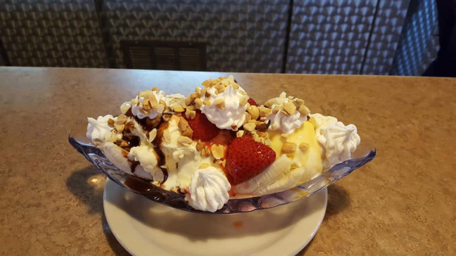

Breakfast · Lunch · Dinner · Pies
The menu,any hour.
Comfort food and classic breakfasts, made the way Grand Island likes them. Breakfast is served any hour we're open.
For prices and today's specials, call 308-381-0440
Served any hour
Breakfast
Eggs your way, pancakes with real butter and flavored syrup, and a cinnamon roll baked fresh.

Mother's Favorites
- Scrambled eggs with hamThree scrambled eggs with diced ham, hash browns, toast & jelly
- Ham, peppers & onions scrambleThree scrambled eggs with diced ham, peppers & onions, hash browns, toast & jelly. Add cheese if you like.
- Biscuits and sausage gravyFull or half order. Add two eggs.
Pancakes Real butter & flavored syrup
- Two pancakes & two eggs with meatEggs the way you like, with bacon, sausage, ham or ground beef
- Two pancakes & two eggs
- StackThree large cakes
- Short stackTwo large cakes
- Cakes & fruitShort stack topped with banana, strawberries or peaches and whipped cream. Add chocolate chips.
More Favorites Served with toast & jelly
- Two fresh eggs and golden hash browns
- Two eggs with meatYour choice of bacon, ham, sausage or ground beef
- Eggs, hash browns & meatTwo fresh eggs, hash browns, with bacon, ham, sausage or ground beef
Steak & Eggs Served with toast & jelly
- Ground sirloin & eggs8 ounces of pure ground sirloin, two fresh eggs and hash browns
- Small sirloin steak & eggs8 oz average, two fresh eggs and hash browns
- Chicken fried steak & eggsWith gravy, two fresh eggs and hash browns
- Large sirloin steak12 oz average
Steaks are served medium rare to well done. Ground beef is served medium well to done only.
French Toast Real butter & flavored syrup
- Texas-style French toastDusted with powdered sugar. One, two or three pieces.
- French toast with fruitTwo pieces topped with fruit & whipped cream
- Cream cheese filled French toastOne, two or three pieces
- French Toast DelightTwo pieces filled with cream cheese, topped with strawberries and whipped cream
Waffles
- Waffle TowerOne waffle topped with two eggs your way and bacon, sausage, ham or ground beef
- Plain waffleDusted with powdered sugar
- Fruit waffleBanana, strawberries or peaches & whipped cream
- StormWaffle topped with ice cream, your own fruit combination and whipped cream
Omelets Three eggs, with toast & jelly
- Cheese omeletYellow and white American and cheddar
- Ham & cheese omelet
- Sausage & cheese omelet
- Western omeletOnions, peppers & ham
- Veggie omeletOnions, peppers & mushrooms
- Mushroom omelet
- Fresh baby spinach omeletSpinach, mushrooms & cheese
Swap toast for an English muffin or two small pancakes at no additional charge. No additional charge for Egg Beaters.
Breakfast Sides
- Cinnamon rollFreshly baked
- Toast or English muffinWhite, whole wheat, marble rye, blueberry or cinnamon raisin
- Hash browns
- Bacon, ham or sausage
- Fruit bowlPeaches, strawberries or bananas
- JuiceApple, cranberry, grapefruit, orange or tomato
- Cereal, hot or cold
- Hominy gritsCup or bowl
Dine in or carryout
Lunch
Sandwiches come with your choice of French fries, onion chips, soup or coleslaw.

Sandwiches
- Tommy's ClubTriple stack of turkey, bacon, lettuce, tomato and mayo on white or wheat
- Bacon, lettuce & tomato
- Chicken fried steak sandwichLettuce, tomato, mayo
- Grilled ReubenCorned beef, Swiss, sauerkraut and thousand island on grilled rye
- Grilled ham & cheese
- Grilled cheese
- Grilled mac & cheese sandwich
- Smothered PhillyBeef or chicken with Swiss, mushrooms, green peppers and onion
- French dipThinly sliced roast beef with a cup of au jus
- Fish sandwichLettuce, pickle & tartar sauce
- Tuna salad
- Patty melt or tuna melt1/3 lb beef, American cheese, onions on request
- Blueberry turkey meltGrilled turkey and white American on grilled blueberry bread
- Grilled chicken or chicken fried chickenFresh boneless breast on a bun
- Chicken stripsGolden breast strips with one side
- Fried egg sandwich
Burgers Lettuce, tomato, onion & pickle on a grilled bun
- Single, double or JumboOne, two or three patties, with or without cheese
- Bacon cheeseburgerTwo patties
- Buffalo burgerHalf pound, with or without cheese
- Pizza burgerLightly seasoned pizza patty, deep fried
Add jalapeños to any burger.
Home-cooked favorites
Dinner
Dinners include one potato (fries, hash browns, mashed or baked), one salad choice (soup of the day, chili, lettuce salad, cottage cheese or coleslaw) and a side.

From the grill
- Char-broiled top sirloinSmall (8 oz average) or large (12 oz average)
- Buffalo steak1/2 lb ground buffalo
- Ground sirloin steak1/2 lb, sautéed onions on request
- Ham steakThick slice of grilled ham with a pineapple ring
- Grilled chicken8 oz boneless breast, or chicken fried chicken
We do not guarantee well done steaks. May we suggest medium rare, medium or medium well.
Country classics
- Breaded chicken fried steakTopped with gravy
- Roast beef dinnerWith our homemade beef gravy
- Meat loafHomemade, topped with beef gravy
- Liver and onions
- Breaded center cut pork loinOne or two pieces
- Tommy's fried chickenTwo or three pieces, with Rotella bread or a biscuit
From the water
- Shrimp dinnerGolden fried butterfly shrimp with cocktail sauce, 3 or 6 piece
- Fish dinnerCrispy fried flounder, 2 or 3 piece
Hot off the stove
- Hot roast beef or turkeyOpen face with whipped potatoes and homemade gravy
- Spaghetti and meatballsOur own thick sauce, soup or salad and garlic toast
- Homemade chili or soup of the dayCup or bowl
Salads & sides
- Chef saladHam & turkey, grilled chicken, tuna salad or chicken strips, with egg, tomato and cheddar
- Cottage cheese and peach bowl
- Onion chips
- Breaded portobello mushrooms
- Cheese cauliflower
- Mozzarella cheese sticks
Dressings: blue cheese, Dorothy Lynch, honey mustard, ranch, thousand island, vinegar and oil.
Order a whole pie in advance
Pies & Desserts
Fresh, homemade pie by the slice or whole, and homemade cheesecake. Every afternoon from 2 to 5 pm, pair a slice with a cup of coffee.

Homemade pie Plain or à la mode
- Apple
- Cherry
- Peach
- Banana
- Lemon meringue
- Coconut
- Pecan
- Pumpkin
- Chocolate peanut butter
- Sour cream raisin
- Strawberry rhubarb
- Blueberry
Sweets
- Homemade cheesecake
- Banana splitThree dips of vanilla, chocolate, butterscotch and strawberry, whipped cream, nuts and a cherry
- Ice cream sundaeChocolate, strawberry or butterscotch
- Milk shakes & maltsChocolate, strawberry, vanilla, butterscotch or coffee
Beverages
- Coffee, tea, hot chocolate or cappuccino
- Soft drinks or milk
- Endless glass of milk
- Raspberry lemonade
Thoroughly cooking foods of animal origin such as beef, eggs, fish, lamb, pork, poultry, or shellfish reduces the risk of food borne illness. Individuals with certain health conditions may be at higher risk if these foods are consumed raw or uncooked.